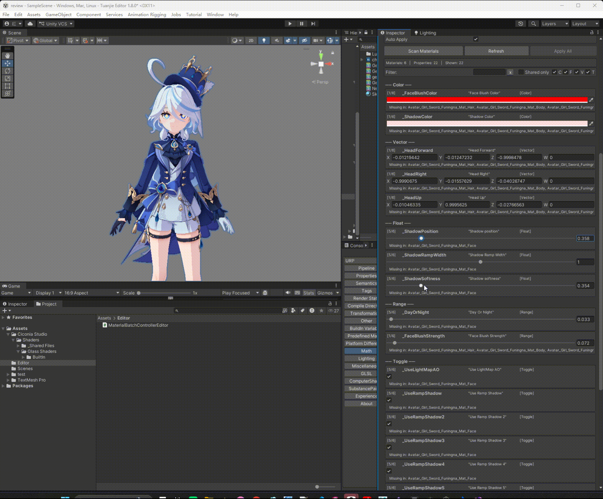
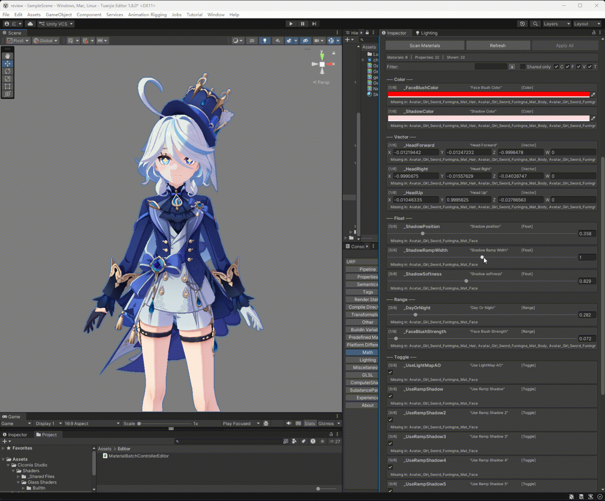
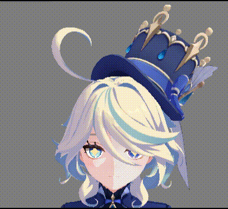
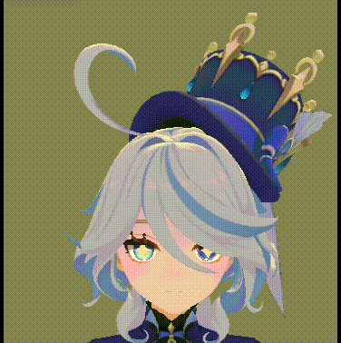
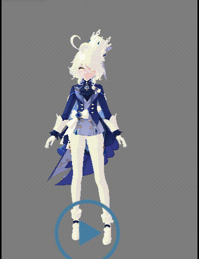

Shader演示
风格化卡通Shader
复刻原神风格卡通角色Shader，含Body与Face两套方案，以及创新的ShiverToon冷颤变形效果
风格化卡通shader
GenshinToon_Body
概述
GenshinToon_Body 核心管线
核心代码片段（RampShadowID）
float RampShadowID(float input, float useShadow2, float useShadow3, float useShadow4, float useShadow5,
float shadowValue1, float shadowValue2, float shadowValue3, float shadowValue4, float shadowValue5)
{
// 根据input值将模型分为5个区域
float v1 = step(0.6, input) * step(input, 0.8); // 0.6-0.8区域
float v2 = step(0.4, input) * step(input, 0.6); // 0.4-0.6区域
float v3 = step(0.2, input) * step(input, 0.4); // 0.2-0.4区域
float v4 = step(input, 0.2); // 0-0.2区域
// 根据开关控制是否使用不同材质的值
float blend12 = lerp(shadowValue1, shadowValue2, useShadow2);
float blend15 = lerp(shadowValue1, shadowValue5, useShadow5);
float blend13 = lerp(shadowValue1, shadowValue3, useShadow3);
float blend14 = lerp(shadowValue1, shadowValue4, useShadow4);
// 根据区域选择对应的材质值
float result = blend12; // 默认使用材质1或2
result = lerp(result, blend15, v1); // 0.6-0.8区域使用材质5
result = lerp(result, blend13, v2); // 0.4-0.6区域使用材质3
result = lerp(result, blend14, v3); // 0.2-0.4区域使用材质4
result = lerp(result, shadowValue1, v4); // 0-0.2区域使用材质1
return result;
}
shader展示
投影演示
 半兰伯特 + Ramp + AO 投影演示
半兰伯特 + Ramp + AO 投影演示
阴影位置调节
阴影位置调节
阴影柔和度调节

阴影柔和度调节昼夜切换
 昼夜切换（Ramp贴图上下半区）
昼夜切换（Ramp贴图上下半区）
采样宽度

采样宽度调节ramp分段映射
 Ramp分段映射（5级阴影）
Ramp分段映射（5级阴影）
GenshinToon_Face 核心实现
核心代码片段（Face SDF Shadow）
half3 LpHeadHorizon = normalize(L - LpU);
half value = acos(dot(LpHeadHorizon, headRightDir)) / PI;
half sdf = step(mixValue, mixSdf); // 硬边界阴影
sdf = lerp(0, sdf, step(0, dot(LpHeadHorizon, headForwardDir)));
SDF阴影展示

SDF面部阴影投影演示红晕展示

面部红晕（BaseMap Alpha遮罩）Vibecoding开发shader
ShiverToon.shader
概述

冷颤波浪 + 动态描边联动float mainWave = sin(phase);
float microWave = sin(phase * 13.0) * 0.22;
float shapedWave = sign(rawWave) * pow(abs(rawWave), sharpPower);
half ampMult = ApplyAmplitudeCurve(positionWS.y);
wave = shapedWave * _ShiverAmplitude * ampMult * sideMask * burstEnvelope;
DCC工具
DCC工具开发案例
Vibecoding驱动的Maya工具开发：namespace清理工具 / Plane-Cube实时变形工具
手绘作品集
手绘作品集
手绘插画作品合集PDF